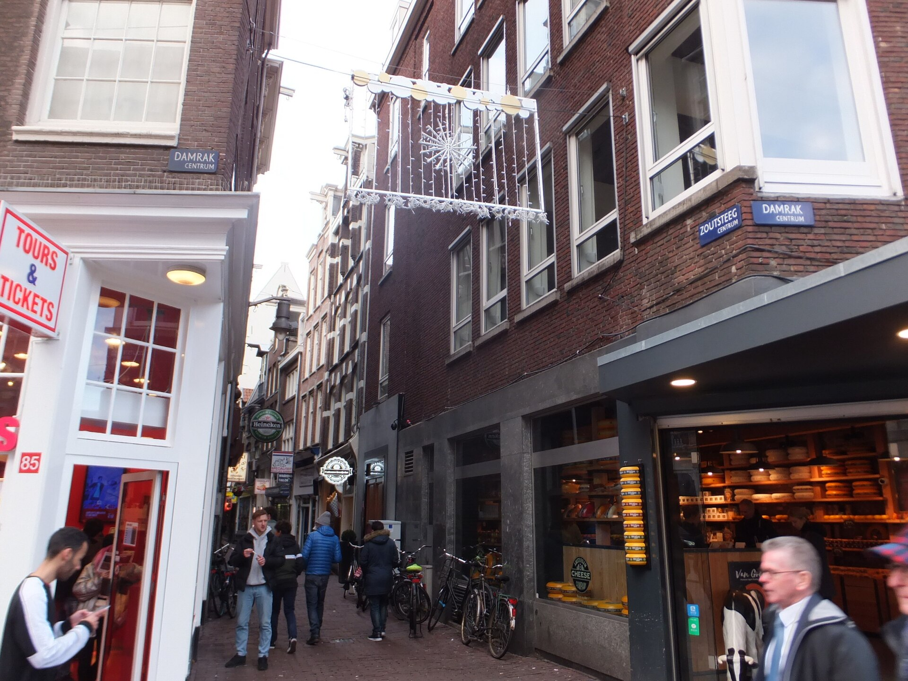
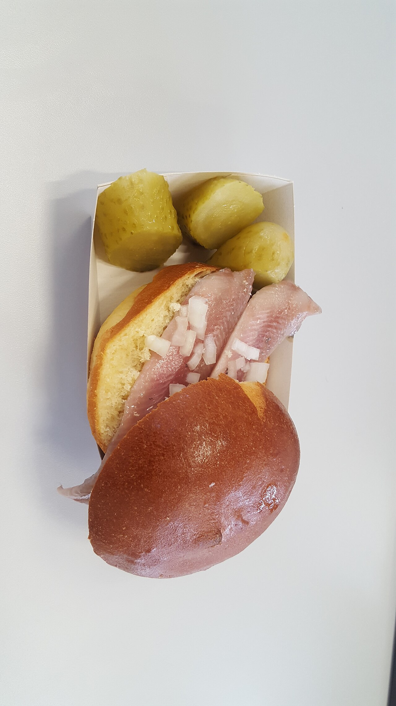
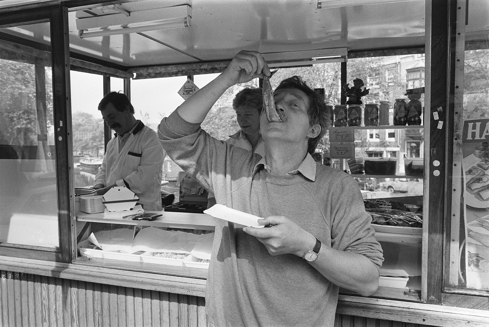

Fishmonger · Zoutsteeg 6 · Amsterdam Centrum
Down an alley
you'd walk
straight past.
Rob Wigboldus Vishandel is a fish counter in the Zoutsteeg — salt alley — a few minutes on foot from Dam Square. Raw herring, smoked eel and fried cod, handed to you over the counter. Order a broodje haring, eat it standing at the window, carry on with your day.
Open 09:00–18:00, seven days a week

01 — The alley
Zoutsteeg means salt alley. Most people walk past the entrance without ever looking down it.
The shop is small — a handful of seats, a bar top facing the street, and a counter with the day's fish laid out on ice. Most people never sit down. They order, they eat where they stand, and the queue keeps moving.
It is a working fishmonger before it is anywhere to have lunch. You can buy fish to take home, or have it made into a roll and handed to you over the same counter. Both happen all day.
02 — The counter
What is on the counter

The one to order
Broodje haring
Salt-cured raw herring on a soft roll, with chopped raw onion and sweet-sour pickle.
This is what the alley is known for. The herring is filleted and served cold, the onion is raw and finely chopped, and there is more than one kind of roll to choose from — say which one you want when you order.
Not sure about the onion? Ask for it on the side. Nobody minds.
Also on the ice
The board at the counter has the current prices and whatever came in that morning. What is on ice changes with the catch — if you are set on something, it is worth a phone call first.
03 — How to eat it
There is a right way, and it involves your fingers.
-
Take it by the tail
Hold the fillet up, tip your head back, and lower it in. This is the traditional way, and nobody in the alley will look twice.
-
Or ask for a roll
If that is a step too far on your first morning, the same herring on a soft roll is exactly as good and considerably easier to manage.
-
Onion and pickle are not optional
Raw onion cuts the fat, pickle cuts the salt. The combination is the whole point — try it before you decide against it.

04 — What people say
What people say
- 4.6Google
from over 1,600 reviews - 4.7Tripadvisor
from over 850 reviews
One of the nicest herring in the city. The fish he uses is really fresh and slightly fatty so it's very delicious compared to other stalls.
Small shop in the alley. Can seat about 7–10 people. Perfect for breakfast. Uncle who owns the shop is very very nice.
I went to this cosy restaurant just to try a real herring. The owner was so friendly and warm-welcoming and the herring itself was really delicious.
The best tasting herring in the city. It is also the cheapest one I found.
Ratings and quotes are taken from public reviews on Google and Tripadvisor.
05 — Find us
Schematic, not to scale.
Zoutsteeg 6
1012 LX Amsterdam
The Zoutsteeg runs between the Nieuwendijk and the Damrak, a few minutes north of Dam Square. Coming up the Damrak from Centraal Station, it is a narrow gap on your left — easy to miss, so watch for the blue street sign.
- Opening hours
- Every day, 09:00–18:00
Worth a call before a long detour. - Payment
- Cash is the safest bet
Bring some with you; card is not always accepted. - Telephone
- +31 20 626 3388
- Nearest stop
- Rokin · Dam Square
Both a short walk away.